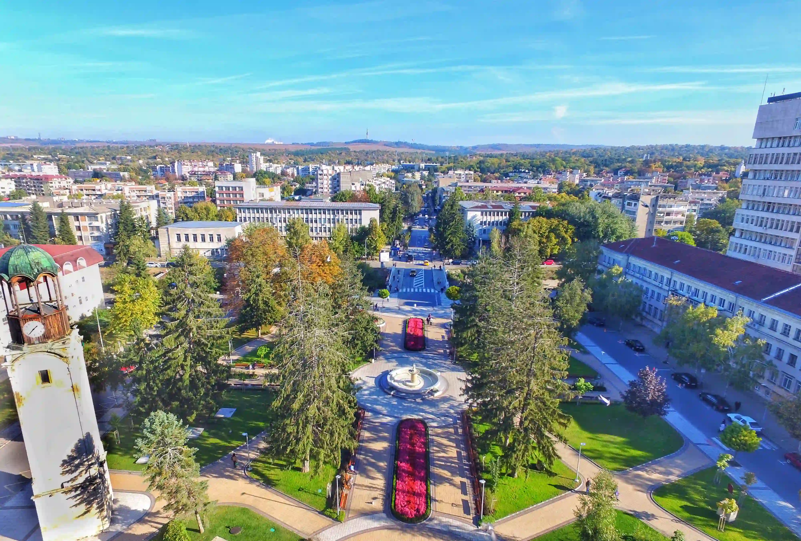

 Кратка информация за град Разград: Разград е град, разположен в Североизточна България. Той е административен център на община Разград, област Разград. Разположен е в южната част на историко-географска област Лудогорие. Според последното преброяване на НСИ към 31.12.2019 година Разград е 29-ият по големина град с население 30 173 жители.
Може да разгледате забележителностите в две групи, като натиснете върху посочените възможности.